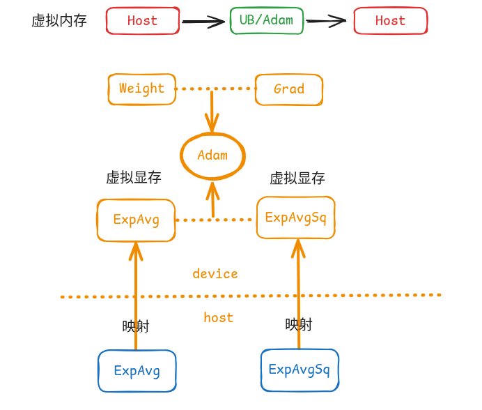

Virtual Optimizer - 优化器显存虚拟化特性
背景与挑战
在大集群训练中，PP的增大会对前些个stage造成较大的显存压力；同时我们观察到，在增大梯度累积的情况下，优化器部分的一二阶动量显存swap的开销可忽略不计，因此可通过将优化器部分的显存swap到cpu上来节省整网显存，而当前分布式优化器逻辑复杂，并且与各种通信并行相互耦合，因此实现一套Swap优化器显存的系统较为复杂。
特性概述
Virtual Optimizer 是一套基于 Ascend NPU 虚拟内存能力的优化器显存优化方案。通过将 AdamW 优化器的一阶和二阶动量（exp_avg、exp_avg_sq）存储在 Host 内存中，而非 NPU 显存中，可以在不修改任何训练代码的前提下，节省 NPU 显存占用。
核心思想：充分利用 Ascend 驱动原生的虚拟内存映射能力，申请一个实际内存在 Host 侧但地址可被映射到 Device 上的张量，使其可参与大多数 NPU 算子计算。

解决方案
核心实现原理
参考MindSpeed框架设计的VirtualOptimizer特性通过修改优化器状态的分配方式，利用虚拟内存特性替代 NPU 内存分配(当前NPU驱动支持25.5.2及以上版本)：
标准 AdamW 的做法
# torch.optim.AdamW (标准实现)
state = self.state[p]
# 直接在 NPU 显存中分配
state['exp_avg'] = torch.zeros_like(p, memory_format=torch.preserve_format)
state['exp_avg_sq'] = torch.zeros_like(p, memory_format=torch.preserve_format)
Virtual Optimizer 的做法
# virtual_optimizer.py (改进实现)
state = self.state[p]
# 通过虚拟内存分配，实际内存在 Host，地址映射到 Device
state['exp_avg'] = torch_npu.empty_with_swapped_memory(
p.size(),
device=p.device
)
state['exp_avg_sq'] = torch_npu.empty_with_swapped_memory(
p.size(),
device=p.device
)
配置选项
Virtual Optimizer 在模型的 config_registry.py 中配置，由
torchtitan_npu.config.configs.OptimizerConfig 相关字段进行配置：
| 配置项 | 类型 | 默认值 | 说明 |
|---|---|---|---|
virtual_optimizer |
bool | false | 是否启用 Virtual Optimizer 特性以进行显存卸载。 |
virtual_optimizer_size |
float/list[float]/str | None | 申请的虚拟内存空间大小。如果希望 swap 掉所有一二阶动量，可以设置为 all。 |
配置示例
在 torchtitan_npu/models/<model>/config_registry.py 的配置函数中设置：
from torchtitan_npu.config.configs import OptimizerConfig
optimizer = OptimizerConfig(
name="AdamW",
lr=3e-4,
weight_decay=0.01,
virtual_optimizer=True,
virtual_optimizer_size="all",
)
启动时也可以通过命令行覆盖同名字段：
bash scripts/run_train.sh \
--optimizer.virtual_optimizer \
--optimizer.virtual_optimizer_size all